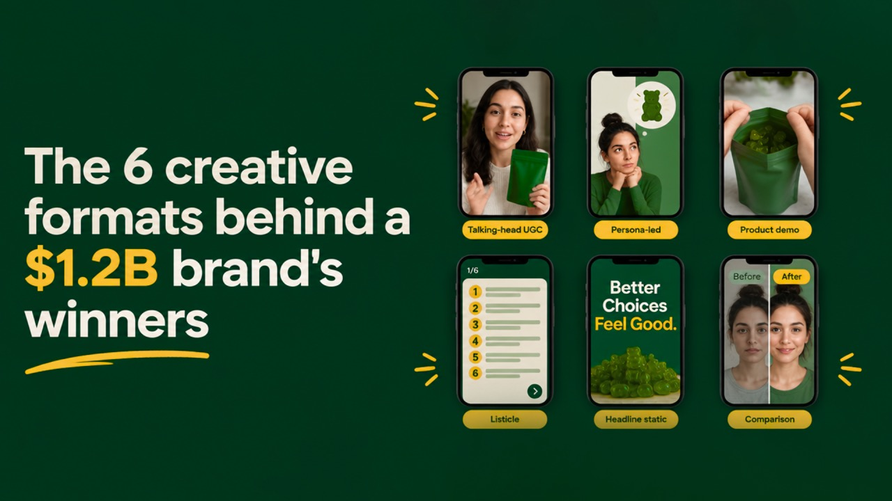

Steal This Billion-Dollar Ad Strategy (Then Reverse-Engineer It With AI)
Grüns sold to Unilever for a reported $1.2B. Its Meta winners fit 6 creative formats. How to pull them, break them down and scale them with Claude.

Something I keep noticing when I go through big DTC ad accounts: the brands spending the most aren't guessing.
They find something that works, then milk it. New hook, new creator, same idea underneath.
And when you line their ads up, the same 6 formats keep showing up.
Grüns is the cleanest example I've found. Unilever picked them up for a reported $1.2 billion, under 3 years after launch, and right now they've got 1,800+ ads live on Meta. That sounds like chaos. It isn't. Almost every winner in there fits one of 6 formats.
So I'm going to use Grüns to walk through all of it.
You don't need their budget for this. You need two things:
- A buyer's eye, so you can tell why something is scaling.
- AI, so you can pull, break down and iterate on winners in an afternoon instead of a few weeks.
Most teams have one or the other. Buyers who've ignored AI can't keep up with how much creative Meta wants now. And the AI-first crowd who've never managed spend make nice-looking ads that don't convert.
You want both. Here's how I'd do it.
These six formats dominate high-spend DTC accounts right now. The exact mix and proof requirements will shift by category, but the underlying patterns (thumb-stop hooks, persona callouts, objection handling in-creative, and deliberate volume) transfer cleanly.
Step 1: Pull the winners (let AI do the digging)
Everything Grüns runs on Meta sits in the Meta Ad Library. It's free and public, and anyone can look.
The tricky bit is telling winners from tests. In early October 2026, Grüns had 1,809 ads live (that's from AdMakeAI, which scrapes the Ad Library every day). Most of those are tests that'll be dead within a week. A handful have been running for 4+ months.
The rule: filter for ads live 30+ days.
Nobody leaves spend on a loser for a month. If a Grüns ad is still running at 30, 60, 90 days, it's very likely hitting its CPA target. So the start date is the first thing to check. The second is the little "This ad has multiple versions" label, because that usually means they're iterating on something that works.
Scrolling through all of that by hand is miserable. Let Claude do it.
With Claude in Chrome, it'll open the Ad Library and do the scrolling for you. Here's the prompt:
Open the Meta Ad Library. Search for grüns. Filter to active ads in the United States. List every ad that has been live for 30+ days or has multiple versions. For each one, note the start date, the format (video, static, carousel), the persona it targets, the hook in the first 3 seconds and the offer. Put it all in a table, longest-running first.
A few minutes later, you've got a ranked list of Grüns' winners.
Step 2: Break down each winner like a creative strategist
A list of winners is just a swipe file. The useful part is figuring out why they work.
Grab a few frames from one of the Grüns winners, or paste in the transcript, and give Claude this:
You're a senior performance creative strategist. Break down this ad:
Worth doing: save this as a Claude Skill (or a Project with instructions). Then everyone on the team breaks ads down the same way, and it stops depending on one person's taste.
The 6 creative formats behind Grüns' winners (and how to iterate each with AI)
1. Talking-head UGC
A creator talks straight to camera on their phone. Kitchen, car, couch. Lo-fi and native, no studio polish.
Why it works: it blends into the feed, so it earns the thumb-stop instead of getting skipped as an ad. Strong hook and hold rates, and it's the cheapest format to iterate: swap the creator or the opening line and you have a new test.
Look for: selfie framing, a pain point in the first line, a quick "I used to be the same", then the product opened and used on camera.
Grüns' winner: talking-head UGC is Grüns' most-used format. "Delicious Nutrition in Every Bite" has been live 4+ months (see it in the Ad Library). A creator holds a huge bag up to camera, and the copy leads with the objection: "If your vitamins don't taste good, what's the point?" The same structure runs right across their account, like a creator in her car calling out that most people miss their daily fiber.
Brief it with AI:
Write a 40-second talking-head UGC script for [product]. Creator talking to their phone. Hook with a pain point my buyer feels every week. Admit you used to have it too. Call out what you tried that didn't work. Show the product in use. Lo-fi, conversational, no brand-speak. Give me 5 alternative hooks for the first 3 seconds.
2. Persona-led problem/solution
The ad calls out its persona in the first second. "If you're on a GLP-1..." "If you have PCOS..." Then the problem, then the product as the solution.
Why it works: the callout does the targeting. Under Andromeda, creative is the targeting, so a persona-specific hook finds that buyer inside a broad campaign. Grüns sends each persona to its own landing page, so message match carries through to CVR.
Look for: one persona per ad, one problem per ad. Grüns runs separate angles for GLP-1 users, women with PCOS, couples trying to conceive, gym-goers and busy parents.
Grüns' winner: a GLP-1 static aimed squarely at men: "Guys, your muscles need more than protein", under the headline "Support Muscle While You Lose Weight". The persona is in the copy and in the creative. Grüns hits the GLP-1 persona from every angle, including a talking-head iteration in 5 versions where a man explains what the drug did to his hair and digestion.
Brief it with AI:
Map every persona who buys [product] and the specific problem each one is solving. Rank the top 5 by size and pain. For each, write 3 hooks that call out the persona in the first line, plus a 30-second problem/solution script that only speaks to that persona's problem.
3. Product demo UGC
A creator uses the product on camera and reacts. For Grüns, that means opening a pack and eating it.
Why it works: it handles the category's big objection, taste, before the click. Answer the objection in the creative and you stop paying for clicks that bounce on the product page.
Look for: pack opened, product in hand, a genuine first reaction, and lines like "tastes like fruit snacks".
Grüns' winner: "20+ Vitamins for GLP-1 Support", live 4+ months (see it in the Ad Library). A creator opens the bag on camera while the copy stacks the proof: 20+ vitamins, 6g fiber, sugar-free, low-carb. The taste angle runs alongside it: "Healthy Has Never Tasted So Good" has also been live 4+ months (see it).
Brief it with AI:
What's the biggest objection buyers have before purchasing [product]? Write 3 product demo UGC concepts where a creator disproves it on camera in under 15 seconds. Include the exact opening line and a shot list.
4. Listicle
The hook is a number: "13-in-1", "20+ vitamins", "60+ ingredients". Then a fast benefit stack.
Why it works: a number in the hook lifts thumb-stop, and a benefit stack communicates value fast. Easy to iterate: change the number, the order or the creator and you have a fresh test.
Look for: a number in the headline or first line, fast cuts, and benefits called out with on-screen text.
Grüns' winner: "Struggling to Get Enough Fiber?" has been live 4+ months across multiple versions (see it in the Ad Library). It runs as a carousel listicle, one point per card, opening on "One of the most common mistakes people make when cutting calories". The number-led version is a long-runner too: "13-in-1 daily immune support", live 4+ months (see it), plus a Lisa Rinna listicle in 6 versions.
Brief it with AI:
Pull the strongest numbers for [product]: ingredients, servings, products it replaces. Write 10 number-led hooks, pick the top 3, and script a 20-second listicle for each with one benefit per beat and on-screen text under 8 words per line.
5. Headline and before/after statics
Single-image ads. One bold headline, or a before/after that tells the story in one frame.
Why it works: statics are cheap to produce and fast to test. The message lands in under a second, so they're the fastest way to validate new angles before you put production budget into video.
Look for: high-contrast colour, a punchy headline, illustrated before/afters and the pack in frame.
Grüns' winner: "Life's too short for rotten egg burps" and "Ease GLP-1 side effects with 6g of daily prebiotic fiber". One headline, one visual, read in a second. Grüns pushes the format harder elsewhere: a bright yellow "F*CK YOU, HAIR LOSS" static, and an illustrated before/after of someone on a GLP-1 losing weight, and half their hair.
Brief it with AI:
Write 15 headline static concepts for [product] targeting [persona]. Short, punchy, written in the persona's own language. Then brief 3 illustrated before/after statics for the strongest angles: frame 1, frame 2 and headline.
6. Competitor comparison
Your product against the alternative the buyer uses today. Split screen, side by side.
Why it works: it targets in-market buyers already in the category, like pill users, powder users and AG1 buyers, who are mid-funnel and comparing options. You run the comparison for them, on your terms.
Look for: split screens, checkmarks vs crosses, and a clearly named alternative.
Grüns' winner: gummies vs a handful of pills, and gummies vs green powder and a shaker bottle. Their talking-head scripts land the same jab: the fix "isn't a $90 green powder you mix before work." They also run the side-by-side layout against the problem itself: "Your Skin Notices GLP-1 Too" puts skin before a GLP-1 next to skin on a GLP-1 with Grüns.
Brief it with AI:
List the top 5 alternatives our buyers use instead of [product]. Pull the biggest complaint about each from reviews, Reddit and TikTok comments. Build a comparison static on the 4 points where we clearly win. Only claims we can substantiate.
Step 3: Scale it (1 concept, dozens of iterations)
This is usually where teams get stuck.
You've got the winners, you know the 6 formats, and you've briefed some solid scripts.
Now you need volume. Grüns doesn't run one talking-head ad. It runs dozens of them, with different hooks, creators and personas: GLP-1 users, parents, gym-goers, women with PCOS.
Meta rewards that, too. Andromeda clusters ads that look alike, so 10 near-duplicates basically count as 1 ad in the auction. You need concepts that are actually different, not the same ad with a new background colour.
Doing that by hand takes a creative team, a buyer and weeks of back and forth.
With AI, it looks like this:
- Pick a format. Start from one of the 6 you just broke down in Grüns' account.
- Pick your personas. List every type of buyer your product serves, the way Grüns does.
- Brief net-new concepts. Have AI write genuinely different versions of that format for each persona: different hooks, angles and creators.
- Launch and test. Run them on Meta, move budget to the winners, and iterate on those.
Take the [format] format and brief 10 genuinely different ad concepts for [product]. Spread them across these personas: [list]. Each concept needs its own hook, angle and creator type. No two should feel like the same ad.
The research tells you what to make. AI gives you the volume and the speed.
The bigger shift
For a long time, media buyers and AI people didn't really talk to each other.
Buyers knew what converts. The AI crowd knew how to ship fast.
That's changing quickly.
If you're a buyer and you don't use AI, you'll get outpaced on creative volume. If you're building with AI and you've never managed spend, you'll keep shipping ads that never get out of the learning phase.
The people who win will do both: use their own judgment to decide what's worth testing, and let AI do the pulling, briefing and scaling.
Grüns spent millions on tests to figure out which of these formats work. You can learn from that in an afternoon.
So, which of these 6 is carrying your account right now?
Get the full kit (free)
I put everything from this article into one kit you can actually use:
- The Ad Library prompt that pulls any brand's long-running winners and tags them by format and persona.
- The ad dissection Claude Skill, ready to upload, so every buyer and strategist breaks down ads the same way.
- All 6 creative briefs, one per format, ready to paste.
- The Grüns swipe file: their winning ads sorted by format, why each one works, and the hook formulas behind them.
- A creative testing tracker to log every test by format, persona and hook, and see what scales in your account.
Comment "FORMATS" and make sure we're connected, and I'll send it straight to your inbox.